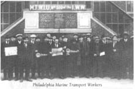
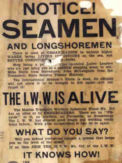

Fellow Worker Ben Fletcher - A Legacy of Solidarity
At a time when Black Americans were under attack from Jim Crow laws, lynch mobs, boss racism, exclusion from the American Federation of Labor, and other forms of institutionalized racism, the "Industrial Workers of the World" welcomed all working people into the union as equals. Incidentally laborers such as Ben Fletcher, that fell outside of the AFL's preference for skilled white anglo saxon males, were able to join forces in the "One Big Union".
Through the recognition of the bosses dependence on workers for profits, and the IWW's willingness to withdraw their labor and efficiency in political battle, the "Wobblies" demanded and won a better standard of living, and respect in the democratic spaces they created on the job.
Fletcher was born in Philadelphia in April of 1890. Little is known about his life until his affiliation with the IWW in 1913. Thereupon he made a name for himself among blacks and whites working on the docks of the East Coast as a successful union organizer.
By 1916 all but two of Philadelphia's docks were under IWW control. By 1917 dock workers had won their demand for .65 cents/hr against the bosses prefernce of .25cents. And in non-IWW ships along the East Coast maritime employers could face a strike if the meals provided did not live up to the IWW standard.
 Improving race relations was recognized as a top priority by Fletcher and other union members. With a disunited workforce, organizers reasoned that working class solidarity would be impossible. Consequently employers could get away with more. To prevent their bosses from taking advantage of divide and rule tactics, IWW dockworkers sponsored anti-racist forums to educate members. Additionally IWW picnics were held for workers and their families to socialize with the intention of building comradery.
Unfortunately this was also a highpoint of working class solidarity on the docks. Industries drive to enter into WW1 and their campaign to create a national mood for class collaboration, xenophobic scapegoating, and the repeal of civil rights was a success on their part. In early September the newly created FBI vandalized IWW offices across the country, stealing membership records on the false pretext that the union was on the side of the Axis nations and was plotting to render America weaker. Later that same month Fletcher was arrested for "conspiring to strike" -an act labeled by the boss press as treason. Afterwords Fletcher landed in Leavenworth prison with hundreds of other Wobblies serving time on a myriad of charges ranging from speaking out against the war, dodging the draft, refusing to sign no strike contracts with their bosses, and engaging in "criminal syndicalism"- a law enacted by some states that aimed to outlaw the IWW as an organization all together.
Nevertheless, Fletcher's legacy of direct action unionism on the docks hasn't vanished. In 1984 dock workers in San Francisco refused to unload cargo from South Africa, which Nelson Mandela later cited as reigniting the anti-apartheid movement in his country. In 1998 Wobblies and others within the progressive "International Longshore And Warehouse Union" were taken to court by the Pacific Maritime Association. The PMA tried to sue dock workers that used a picket line to successfully prevent a ship with scab cargo out of the U.K. from being unloaded. The PMA's McCarthyite request that IWW and ILWU member Robert Irminger name names of those that participated in the protest, so that they could be sued for the resulting business losses, was ruled out by the court on basic first ammendment grounds. Further pressure motivating the prosecution to back down in their witchhunt is the ILWU's success in shutting down the docks on the days of the court hearings. More recently the ILWU has voted to strike West Coast U.S. docks on April 24th 1999 in solidarity with political prisoner Mumia Abu Jamal, a man on death row for a crime that millions doubt he commited.
Then, as now, there is a recognition of the need for independent direct action on the part of dock workers. Our class has tried obedience to management aims and it has gotten us nowhere but a stay at the poorhouse. So now its high time to continue with our tradition of worker autonomy, because freedom is not given. It's taken by those who demand it.